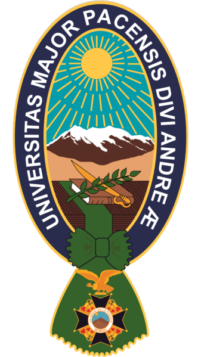
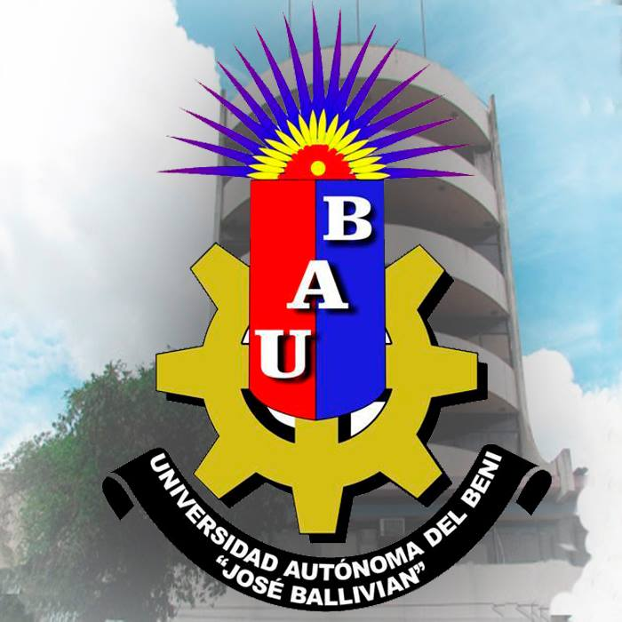

Universidad Mayor de San Ándres
Haz clic en el siguiente enlace para visitar la página y busca la sección de convocatorias:
Ir a la página
Universidad Pública de El Alto
Haz clic en el siguiente enlace para visitar la página y busca la sección de Areas y Carreras:
Ir a la página

Universidad Autónoma del Beni "José Ballivián"
Haz clic en el siguiente enlace para visitar la página y busca la sección de Admisiones:
Ir a la página
Universidad Simón Bolivar
Haz clic en el siguiente enlace para visitar la página de la Universidad
Ir a la páginaUniversidad Nacional "Siglo XX"
Haz clic en el siguiente enlace para visitar la página de la Universidad
Ir a la página